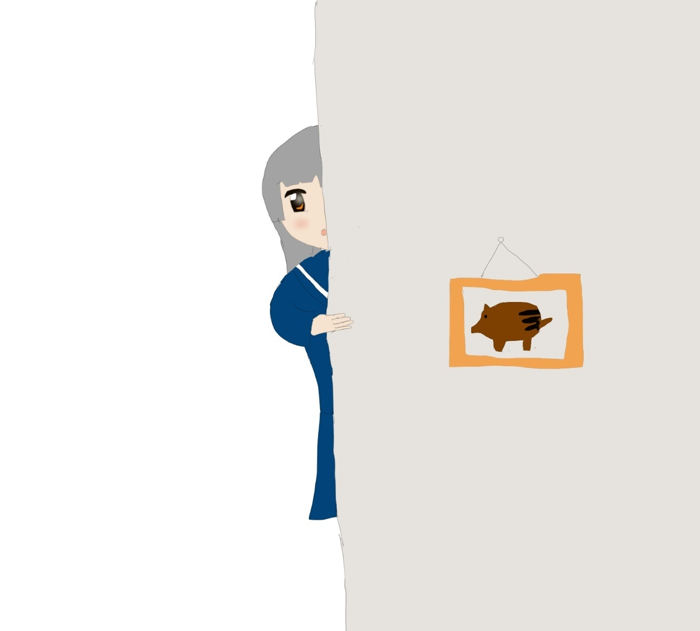

| アニメ・ゲームキャラクターソングCD10選 | |
| けぴ | |
| (2019) | |
アニメ・ゲーム
キャラクターソング
CD10選

はじめに
この本はアニメやゲームの特にキャラクターソングを中心に、著者が独断と偏見で選んだCDを紹介していくものである。
一般的にキャラクターソングというのは評価の対象になりにくいが、よくよく見ると有名な作曲家が制作を担当していたり、声優さんが駆け出しの頃の歌声が聞けたりと、見過ごすにはもったいないCDがたくさんあるのである。今回はそんなキャラクターソングCDを掘り出して紹介していきたい。
発売年：2003年
レーベル：キングレコード
コメント：ゲーム「エンジェリック・コンサート」のソング集。歌手には水樹奈々さん、田村ゆかりさん、堀江由衣さんという声優界で御三家と言われる方々が名を連ねている。Amazonでは3000円程度で販売されている。
2.「北へ。」 WHITE ILLUMINATION PURE SONGS and PICTURES
発売年：1999年
レーベル：メディアファクトリー
コメント：ゲーム「北へ。」のソングアルバム。大谷育江さんや川澄綾子さんなど、今をときめく声優さんたちが歌を担当している。全体的にスローテンポの曲が多い印象。Amazonでは中古品で4000円程度の値段で販売されている。
3.極上生徒会 ベストアルバム 極上音楽集
発売年：2005年
レーベル：キングレコード
コメント：アニメ「極上生徒会」のソングアルバム。田村ゆかりさんや沢城みゆきさん、川上とも子さんなどが歌唱参加している。全体的にアップテンポの曲が多い印象。Amazonでは1500円程度で販売されている。
4.トゥルーラブストーリーイメージアルバム～メモリアルソングス
発売年：1997年
レーベル：アンティノスレコード
コメント：ゲーム「トゥルーラブストーリー」のソングアルバム。池澤春菜さんや丹下桜さんなどの声優さんはもちろん、キャラクターソングではないものの仲間由紀恵さんなども歌唱参加している。Amazonでは販売を確認することは出来なかった。
5.ときめきメモリアル Only love ベストアルバム link to you
発売年：2008年
レーベル：コナミデジタルエンタテインメント
コメント：アニメ「ときめきメモリアル Only love」のキャラクターソングのベストアルバム。牧島有希さんや藤田咲さんなど、当時中堅であった声優さん達が歌を担当している。著者はアニメイトで入手したものなのだが、Amazonでの販売を見つけることはできなかった。
6.センチメンタルグラフティ スーパーベスト せつなさの扉
発売年：2000年
レーベル：NECインターチャネル
コメント：ゲーム「センチメンタルグラフティ」が発売される前に出たイメージソングのベストアルバムである。豊嶋真千子さんや牧島有希さん、前田愛さんなどが歌唱を担当している。Amazonでは3000円程度の値段で販売されている。
7.セラフィムコール 音楽全集
発売年：2000年
レーベル：パイオニアLCD
コメント：テレビ東京系アニメ「セラフィムコール」の主題歌集。キャラクターソングも含め全曲がオープニングやエンディングとして使われている。矢島晶子さんや川澄綾子さん、西村ちなみさんなどが歌唱参加している。Amazonでは2000円程度の価格で販売されている。
8.フレンズ～青春の輝き～ ヴォーカルコレクション
発売年：1998年
レーベル：キングレコード
コメント：ゲーム「フレンズ～青春の輝き～」のキャラクターソングアルバム集である。豊嶋真千子さんや松本梨香さん、水谷優子さんなどが歌唱参加している。80年代チックな音楽が多い印象。Amazonでは300円程度で販売されている。
9.ルナ・ソングス ～青き星の伝説～
発売年：1997年
レーベル：EMIミュージック・ジャパン
コメント：ゲーム「ルナ」のキャラクターソング集。氷上恭子さんや横山智佐さん、井上喜久子さんなどが歌唱参加している。Amazonでは700円程度で販売されている。
10.RAINBOW シンフォニックレイン
発売年：2004年
レーベル：キングレコード
コメント：ゲーム「シンフォニックレイン」のキャラクターソングアルバム。全曲を岡崎律子さんが作曲担当している。笠原弘子さんや浅野真澄さん、折笠富美子さんなどの声優さんが歌唱参加している。Amazonでは中古も含め販売されていない。
おわりに
いろんな年代のCDを紹介してきたが、どれも味のあるいい作品が多い。一度キャラクターソングを探し始めればキリがないほど出てくるのである。あなたも素敵な出会いを求めて、キャラクターソングの世界を旅してみてはいかがだろうか。